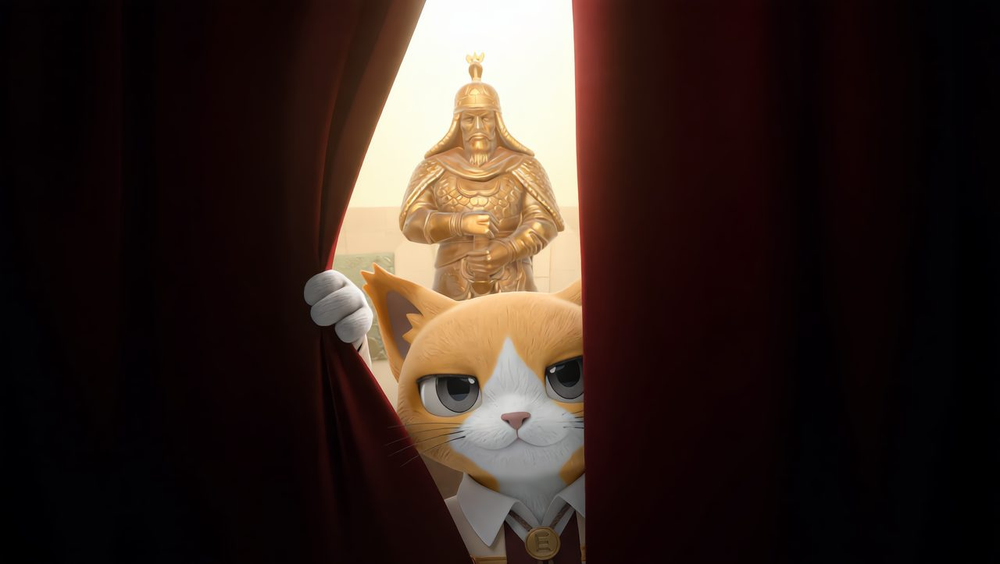
나레이션: 그저 단순한 고양이였을 뿐인 에다. 이 작은 고양이는 세상의 소리들을 듣기 시작했고, 곧 세상의 모든 소리가 음악이 될 수 있음을 깨달아. 음악과 신비의 숲 애니피아로 떠난 에다는 이제 마에스트로가 되어 우리들에게 돌아왔지. 자, 다함께 불러볼까? 에다, 에다, 에다!
[영상은 검은 화면. 관객들 호응으로 에다를 부르고 나면, 에다, 고양이가 비좁은 틈을 비좁고 나오듯이 얼굴 구기며 화면 한 가운데에 등장. 에다는 관객을 슥슥 둘러보다가 구멍을 비집고 나온 다음, 한 쪽 모서리로 가서 화면을 쫙 연다. 그러자 권율의 동상 앞 광장의 모습이 보여진다.]
에다가 화면 끝을 붙잡고 스크린 모서리에서 반대쪽 모서리까지 끌어서 화면이 Wipe되면서 전환되고, 그대로 에다는 스크린 밖으로 튀어나와 무대 밖으로 나온 뒤에 XR 마에스트로로 전환할 수 있도록.
성악가들, 등장한다.
M01. 에다 서곡
곡이 끝난다. 성악가들 퇴장한다. 에다, 단상을 내려와 권율 장군이 잘 보이게끔 선다.
에다: 여러분 안녕, 반가워! 사람 정말 많다. 오늘 공연의 이름이 뭐야? (호응) 그래, 고양이 에다 즉 이몸이 권율을 만나다! 그래서 권율 장군을 만나러 여기, 행주산성까지 왔지, 짜잔! 권율 장군의 동상! 갑옷에, 투구에, 검을 잡고 있는 위엄 넘치는 모습! 멋지지! 자, 오늘은 직접 권율 장군을 만나볼 거야. 그러려면 여러분의 도움이 필요해. 나 같은 음악가한테 필요한 건 뭘까! (관객 호응에 따라) 박수야! 여러분이 치는 박수야말로 내 힘이 되거든. 우린 오늘 그걸로 권율 장군을 깨워볼 거야. 다들 준비됐지? 좋아. 한 번 들어봐!
에다, 피아니스트에게 손짓한다. 피아니스트, 'M02 희망의 노래로'의 전주 부분을 친다.
에다: 들었지? 빰 빰 빠라빰빰 빰 빰 빠라빰빰. 이 노래는 이 멜로디가 계속 반복해서 나와. 여러분들이 해줘야 할 건, '빰 빰'에서 박수 두 번 치는거야, 이해했지? (관객 호응 유심히) 좋아, 다같이 연습해볼까? 아 참, 연습하기 전에, 얍!
에다, 손짓하자 화면에 박수 타이밍 체커가 나타난다.
에다: 이러면 여러분이 박수를 잘 쳤는지 알 수 있을거야. 자, 해보자!
에다, 다시 피아니스트에게 손짓하고 전주부 반복한다. 다 같이 리듬 연습한다.
에다: 오, 잘하는데? 역시 오늘 관객들 수준이 높아. 좋아, 그럼 실전으로 가볼까!
성악가들, 등장한다. M02 희망의 나라로
관객들, 에다의 지시와 음악에 맞춰 박수 친다. 박수가 타이밍에 맞게 잘 쳐지면 권율 동상이 빛난다. 점점 회차를 거듭하며 맞는 박수가 쌓이자 권율의 동상은 아주 하얗게 빛이 나게 된다. 곡이 끝난다, 성악가들, 퇴장한다.
에다: 성공이야! (빛이 커지자) 으악, 눈부셔!
에다, 화면 바깥으로 도주한다. 바깥에 나가서 에다 가면으로 갈아 입은 후에 다시 등장한다. 이제 화면 속 에다는 없다. 무대 위로 등장한 에다는 눈부시다는 듯이 손짓하고, 결국 권율 캐릭터 등장. 하지만 위엄 있는 모습은 없고 다소 귀여운 데다가, 갑옷도 투구도 검도 사라졌다.
에다: 어라?
권율: 어?
권율과 에다, 권율 장군의 캐릭터 모습을 살펴본다.
에다: 어라라?
권율: 어라?
에다: 이게 뭐야!
권율: 이건 뭔가!
에다: 장군, 이리 나와 봐!
권율 캐릭터, 동상에서 뛰어 내려오고 에다 반대쪽 화면 바깥으로 나온다.(다소 귀엽게 아장아장) 권율 배우, 등장. 흑철린만 입고 있다.
권율: 아니!?
에다: 장군!
권율: 이 밖으로 나올 수가 있는 거였군. 근데 모습이 참 다르오. 어찌된 일인가? 이게 대관절 무슨 상황이고, 희한하게 생긴 자네는 누구고, 나는 왜 이러고 있는 것이고? 당최 이해가 안 가는…
에다: (말 끊고) 난 에다야! 위대한 마에스트로이자, 세상과 세상을 잇는 음악 커뮤니케이터지. 장군이 이 바깥으로 나올 수 있었던 것도 내 덕분이고. 약간… 달라진 것 같지만 말야. 장군 소개도 해줘!
권율: 크흠, (위엄 있게) 지정(知政)의 가문인 안동 권씨, 전 영의정 철(轍)의 아들로서, 현 수명 도원수(受命都元帥) 권율(權慄)이라 하오.
에다, 박수 친다. 관객들도 박수 친다.
권율: 그래, 저 소리였어. 저 소리에 내가 깨어난 것 같소.
에다: 맞아, 우리가 다같이 권율 장군을 불렀거든. 그런데, 몇가지가 빠진 것 같아. 장군.
권율: 그렇지. (자신을 둘러보며) 일단 이 모습과…
권율, 스크린 뒤로 슬쩍 들어간다. 권율 캐릭터 등장한다. 몇 번 장난 식으로 그렇게 반복한다
권율: 이 모습 모두 어색하거니와. 기억도 흐릿하고… 내 갑옷과 투구, 검이 사라졌군.
에다: 그래, 지금부터 그걸 찾으러 가 보자!
권율: 뭐? 어디서 찾는단 말인가?
에다: 권율 장군이 가장 빛나던 곳에서! 가자!
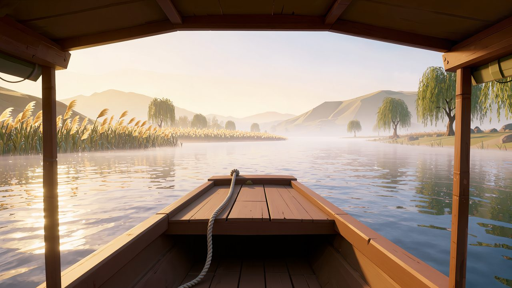
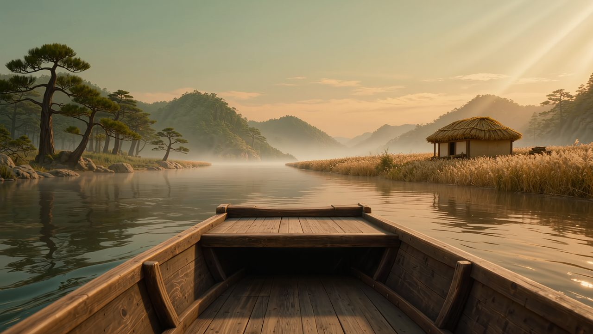
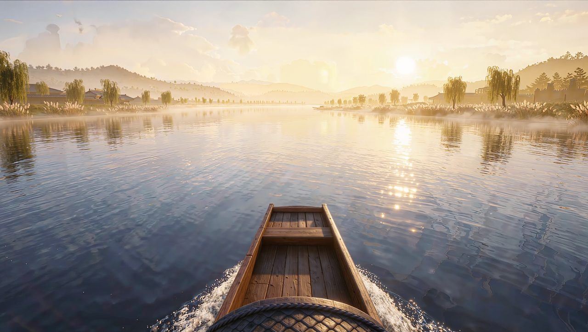
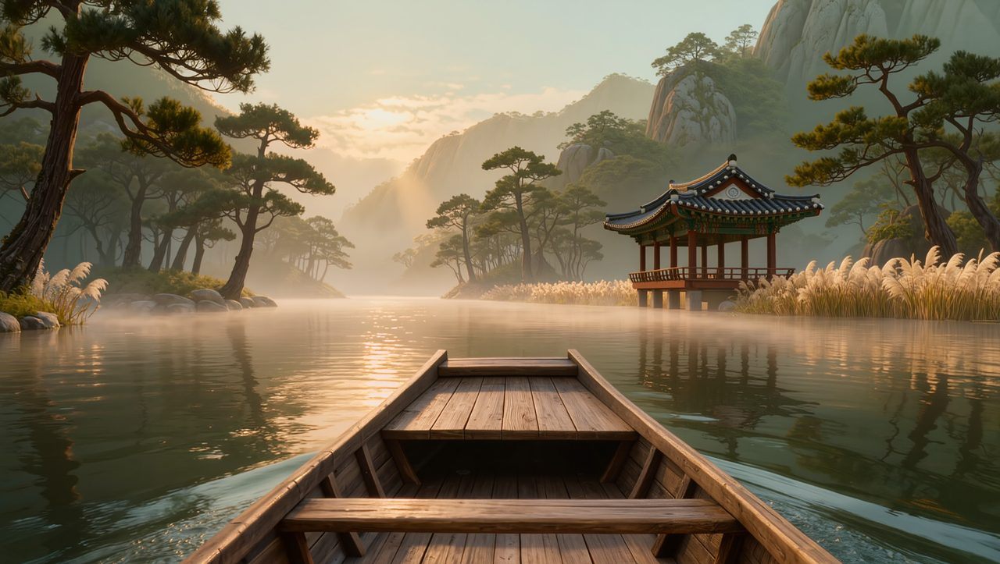
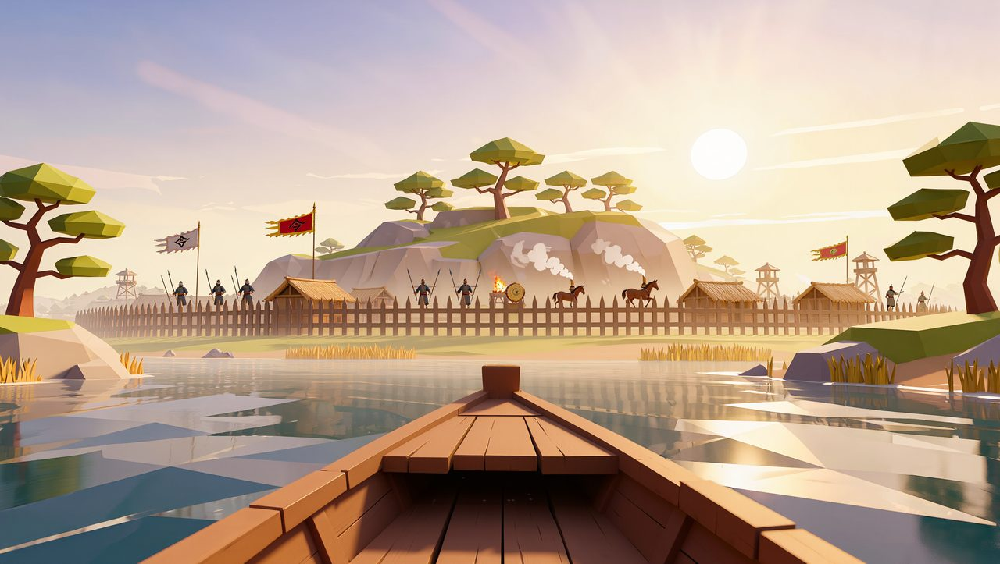
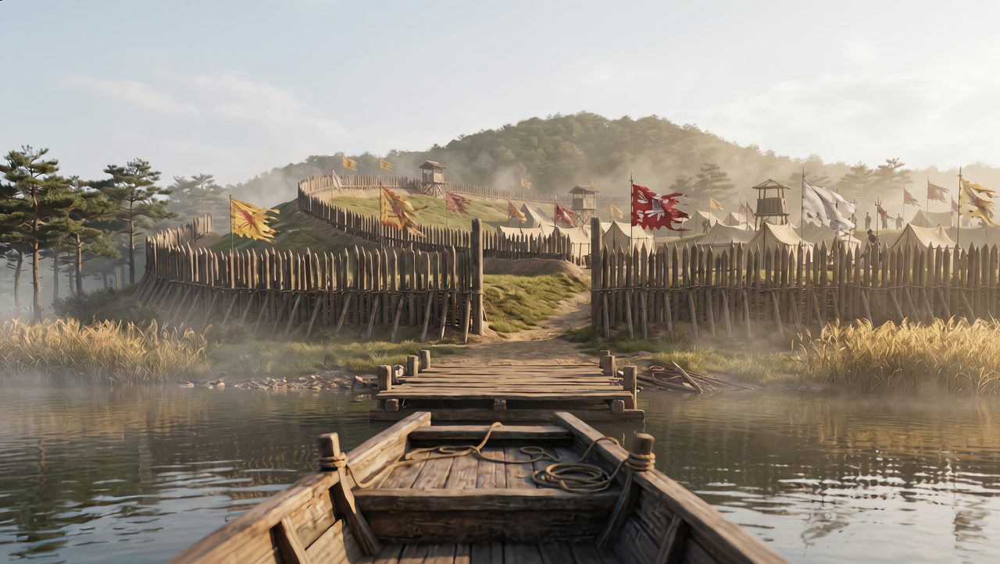
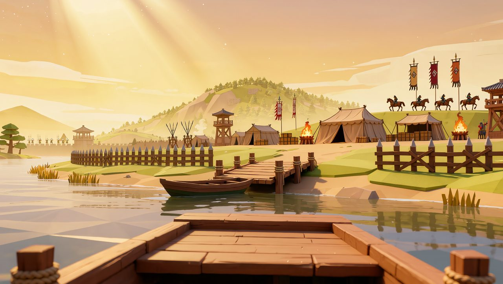
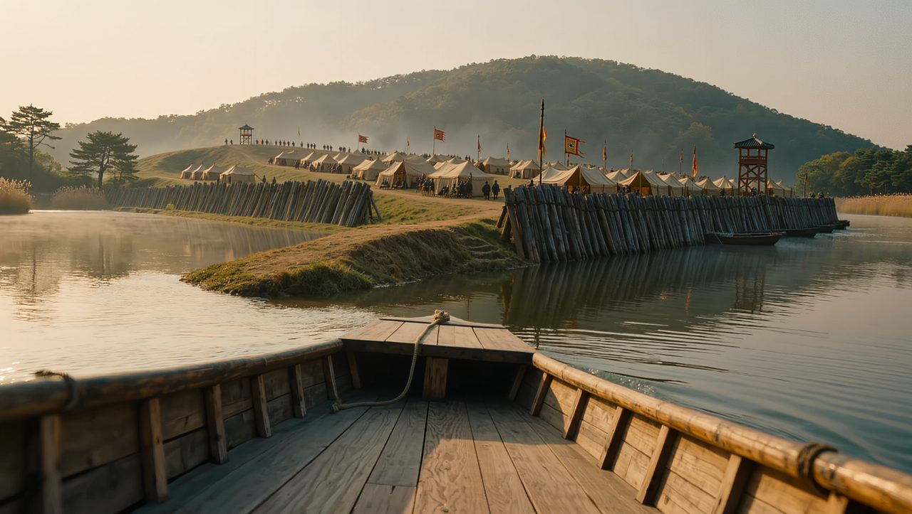
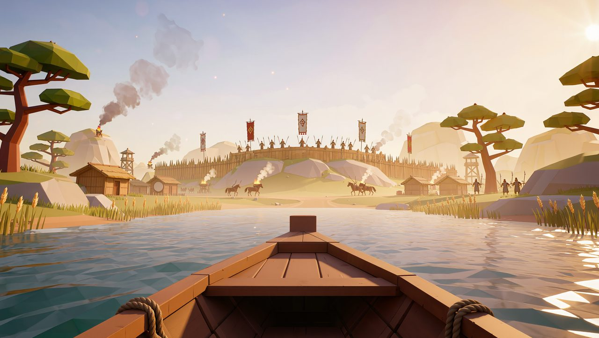
에다, 권율을 이끌고 간다. 에다가 권율을 이끄는 방향으로 Wipe 화면전환, 화면은 행주산성 나루터로 변한다.
M03 Barcarolle — 음악, 시작한다. 성악가, 등장한다.
연출 제안 1. 에다와 권율 배우가 퇴장하고 캐릭터가 나와서 배를 띄우고 배 위에 계속 떠 있는다.
연출 제안 2. 에다와 권율 배우가 상수쪽 스크린을 배 갑판처럼 만들어 그 위에 서 있는다.
전주 흐르는 중에 둘, 대사 진행.
권율: 어디로 가는 것인가?
에다: 권율 장군이 가장 빛나던 곳으로.
권율: 내가 가장 빛나던 곳?
에다: 장군이 지금 이렇게 된 건, 장군에 대한 사람들의 기억이 흐릿해서야. 우린 과거의 행주산성으로 갈 거야!
권율: 이 모든 게 말이 되지 않는 상황이지만, 이건 더 말이 안 되는군. 어떻게 가능하단 말인가?
에다: 음악으로!
노래, 시작된다.
노래의 클라이막스, 두 소프라노의 '아-아' 할 때쯤 배가 도착하여 정박하고, 화면이 움직여 배경이 옛 행주산성터로 변한다. 굽이진 언덕, 박혀진 목책들, 보이는 군영들. **군사들의 모습이 보이면 좋겠지만, 기술적으로 힘들면 제외. 성악가들, 퇴장한다.
에다: 도착했다!
권율: 이곳은…
에다: 맞아, 행주산성이야!
권율: 오늘은 신기한 일 잔뜩이구먼. 그래, 기억이 떠오른다… 임진 난리 때였지. 내가 광주 목사였을 시절이고.
에다: 응. 장군은 자그마치 1500명의 의병을 이끌고 왜군을 물리치면서 북진했어. 그리고 이곳 행주 덕양산에 도착해 진지를 구축했지.
권율: 맞아. 정말 힘든 시기였어. 그야말로 우리 한반도 전체가 전란에 휩싸인 때였다.
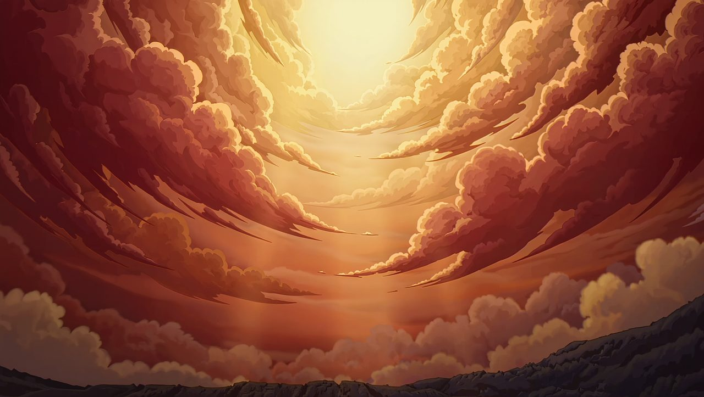
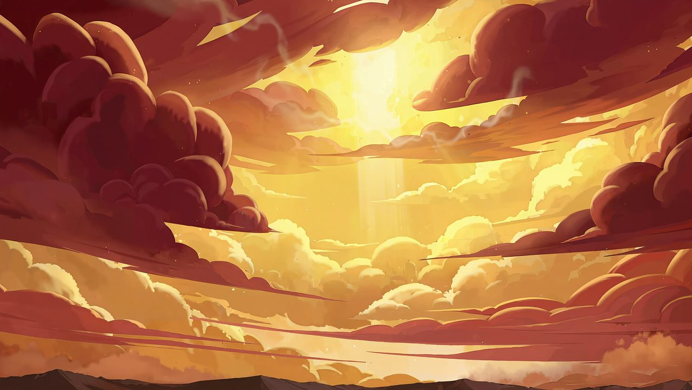
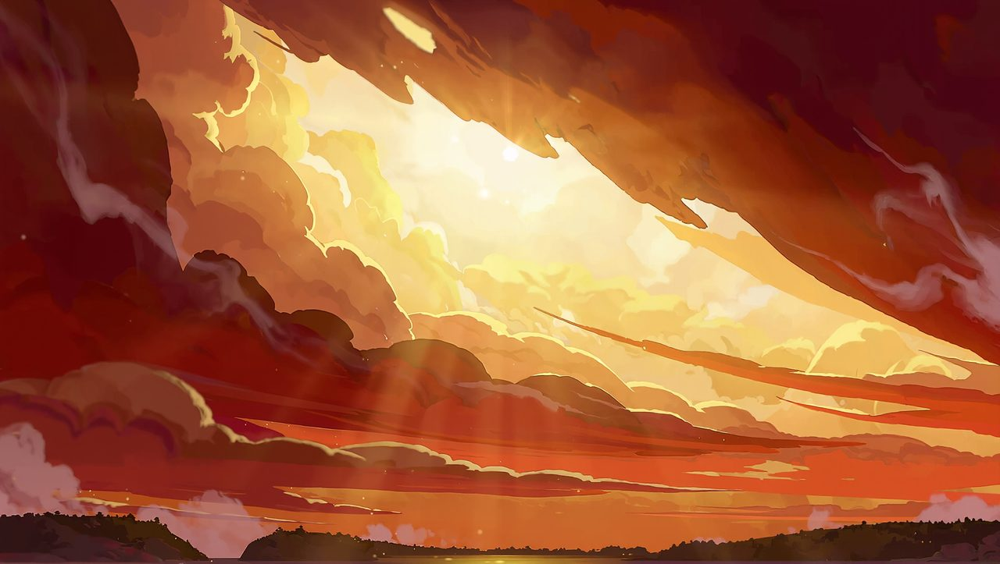
M04 Va pensiero 또는 남촌. 전주, 시작한다. 영상, 조금 더 하늘을 비추고, 전란의 기운이 드리우듯 붉고 노란 구름이 하늘을 덮는다. 에다와 권율은 단상 앞에 서 있는다.
권율: 나와 병사들은 할 수 있는 최대한의 준비로 임했다. 왜군 3만명이 몰려온다고 했을 때 우리 병사들은 의병을 포함해 고작 2천 3백 명이었지.
에다: 장군은 그들을 앞에 두고 말했어.
권율: "이제 자세히 적세를 살펴본다면 그 양과 질에서 우리가 맨손으로 당해 낼 도리가 없으니 무엇으로써 제압해 이길 것인가. 오직 한 가지 죽음으로써 나라의 두터운 은혜에 보답하는 길밖에는 없도다. 남아(南兒)는 의(意)와 기(氣)만 생각할 뿐이지, 어찌 공훈과 명예를 다시 논하랴! 천 사람이 한 마음으로 서로 죽기를 맹세하자."
조명 전환. 에다와 권율의 조명은 흐려지고, 성악가들 탑 조명을 비춘다.
노래 시작, 노래 끝난다. 성악가들 퇴장한다.
에다: 조국을 그리워하는 마음을 갖고 부르는 음악으로 지금 상황을 매치해봤어. 장군, 어때?
권율: 좋은 음악이구나. 기억이 났다. 내가 행주산성을 어떻게 준비했고, 어떤 마음가짐으로 임했는지.
에다: 저기 봐!
하늘에서 빛이 내려오더니 권율 장군의 갑옷으로 변한다. 영롱한 빛깔의 갑옷.
에다: 장군의 갑옷이다! 그래, 장군의 마음가짐, 전투에 앞서서 준비하는 모습이야말로 갑옷 그 자체였던거야. 어서 가서 입어봐!
권율, 에다가 밀어주자 CYC 스크린 뒤로 들어간다. 들어가는 타이밍에 맞춰 권율 캐릭터 등장, 권율 캐릭터, 화면 한 가운데로 간다. 갑옷이 점점 내려와 (뷰도 하늘에서 아래로 내려온다) 권율의 몸에 붙는다, 빛나면서, 권율 캐릭터 갑옷이 생긴다. 권율 캐릭터, 신나면서 다시 화면 밖으로 나온다. 권율 배우, 등장한다. 이제 갑옷을 입고 있다.
권율: 어!
에다: 어!
권율: 오!
에다: 오!
권율, 다시 화면 안과 밖을 돌아다니면서 캐릭터 모습과 본인 모습을 장난스레 오간다. 그러다 무대 위로 등장한다.
권율: 이 묵직한 느낌, 장부는 아무렴 갑옷이 있어야지. 가만, 이 갑옷이 내 마음가짐과 준비성을 의미한다면, 투구는 무엇을 의미하겠는가?
에다: 아주 좋은 질문이야, 장군. 3만 대 2천 3백. 이 압도적인 전력 차에도 장군은 왜군의 공세를 성공적으로 막아냈어. 모두 미리 잘 준비한 덕분이었지. (권율, 갑옷을 텅텅 치면서 의기양양해 한다.) 하지만 그것만으로 막아낸 것은 아니야. 장군의 뛰어난 통찰과 지략!
권율: 크흠흠. 자꾸 그러니 쑥스럽구먼. 하지만 잘 모르겠소, 아직도 기억이 흐릿하여.
에다: 걱정 마, 내가 있잖아! 장군의 뛰어난 지략을 알려줄 수 있는 일화가 있어. 행주대첩이 일어나기 전, 독산성 전투를 기억해?
권율: (머리를 쥐어짜며) 끄응… 잘 기억나지 않소.
에다: 안 되겠다. 장군, 들어가 있어! 내가 해볼게!
에다, 권율을 화면 안으로 집어넣는다. 권율 캐릭터, 화면 안으로 들어간다. 에다, 관객에게 말한다.
에다: 자, 이번에도 여러분의 도움을 받을 거야. 수원 독산성에서 일본군과 대치하고 있던 권율 장군의 부대에는 마실 물이 떨어져가고 있었어. 왜군이 포위하고 기다렸다면 큰일이었겠지만 이 때 권율 장군은 한 가지 꾀를 냈지. (권율 장군 따라하듯이) 쌀로 말을 씻기라! 멀리서 보면 물로 씻기는 줄 알고 조급해질 것이다! (갑자기 확 분위기 바꿔) 오페라에서도 이렇게 재치 있는 캐릭터가 있어. 그 이름도 유명한 피가로! 이번엔 그의 음악에 맞춰 박수를 쳐 볼 거야, 준비 됐지? 연습해보자.
에다가 손짓하자, 화면 바뀐다. (가능하다면 독산성 배경으로, 불가능하다면 언덕 애셋 사용하여) 당당하게 서 있는 권율 장군의 캐릭터와, 그 옆에는 위엄 있는 말 한 마리가 있다. 그리고 나온 박수 타이밍 체커. Non piu andrai의 멜로디를 피아노로 들려준다. Non piu andrai, farfalle, ne amoroso.의 멜로디 뒷박에 박수 치도록 한다. 박수 타이밍이 맞으면 쌀이 말 위로 쏟아진다.
성악가, 등장한다.
에다: 좋아, 이제 실전이야!
M05. Non piu andrai – Figaro aria. 노래 시작한다. 노래 시작하자, 왜군을 상징할 수 있는 애셋이 화면에 등장한다. (왜군 깃발이 끼워져 있는 군영, 섬, 어떤 형태든) 타이밍 성공해서 GOOD이 뜨면 땀방울 튀어나오거나 군영이 흔들리거나 등의 당황한 표현. Perfect 가 뜬다면 더 강하게 표현.
Cherubino alla vittoria! 할 때, 에다가 더 자주 박수 치도록 유도한다. 마지막 Militar! 할 때 박수 끝나고, 왜군 군영이 박살나거나 도망간다. 도망간 자리에 권율의 투구가 게임의 보상처럼 남아 있다. 노래 끝난다. 성악가 퇴장. 권율과 말이 있던 자리도 사라지고, 투구로 클로즈업된다.
권율 배우, 무대 위로 등장한다. 손에는 투구를 들고 있다. 권율 캐릭터도 그림자처럼 따라 화면에 등장한다. 권율 배우가 화면 속 투구가 있는 위치까지 오게 되면 권율 캐릭터도 투구를 줏어 든다. 같이 타이밍 맞춰서 투구를 쓴다. 투구를 쓰자, 권율 캐릭터 금빛으로 화려하게 빛나면서 투구를 쓴 권율 캐릭터로 변신하고, 곧장 파티클로 변해 사라진다.
권율: 그래, 이 투구야말로 나의 위엄이며, 나의 통찰과 지략이구나.
에다: 장군, 기분이 어때?
권율: 이제 기억이 난다. 이 권율이 어떻게 왜군들을 물리쳤는지 말이야. 고맙소, 괴양이 선생.
에다: 괴양이?
권율: 괴양이처럼 생기지 않았는가?
에다: 난 괴양이가 아니라 고양이야! 그리고 내 이름은 에다야. 그냥 고양이가 아니라.
권율: 알겠소, 에다 선생.
에다: 이제 검만 남았네. 검을 찾으러 가자!
권율: 찾으러 갈 필요 없소. 어떻게 찾아야 할 지 알 것 같으니까.
에다: 오!?
권율: 그저 찾을 것은 나의 의지, 우리의 결의, 승리하겠다는 다짐이오!
권율, 화면 뒤로 들어가서 메타 퀘스트 쓴다, 성악가 등장.
*에다는 무대 위에서 구경하거나, 무대 밖으로 나가거나, 스크린 한 쪽으로 들어가서 응원하는 식으로.
M06. Nessun dorma — XR마에스트로, 권율.
노래 시작한다. Vincero 부분에서, 권율의 손에 검이 생기는 연출. 노래 끝난다, 성악가 퇴장한다.
권율: 이 검이야말로, 조선을 수호하겠다는 의지이자 힘 그 자체요!
에다, 다시 무대 위로 등장.
에다: 드디어 검을 되찾았구나! 장군이 이렇게 지휘도 잘하는 지 몰랐네!
권율: 다 선생에게 배운 덕이 아니겠는가. 이제 때가 되었소. 왜군을 어떻게 물리쳤는지 모두에게 보여줄 때가! 에다 선생, 이번에도 여기 모인 백성들의 도움을 받아야 할 것 같으니, 선생께서 수고해주시길 바라오.
에다: (사극톤으로) 장군께서 그리 말씀하시지 임하지 않을 재간이 없소. (다시 원래 말투로) 자, 이제 진짜 마지막이야! 여러분, 한 번만 더 도와줘. 할 수 있지? 우리의 마지막을 함께할 노래는 '아름다운 나라'야. 모두 잘 알고 있는 노래일 것 같은데. 참~ 아름다운~ 많은 ~ 꿈이 있는~ 이 부분에 박자를 맞춰서 박수를 쳐 보는 거야. 한 번 연습해볼까?
에다, 손짓한다. 피아노 반주, 후렴구 멜로디를 쳐 준다. 에다, 박수 유도한다.
에다: 좋아! 딱 그렇게만 해주면 될 것 같아. 이제 실전으로 가 볼까? (사극 톤으로) 준비됐소, 장군?
권율: 이쪽은 이미 준비를 마쳤소! 자, 시작하겠소!
성악가, 등장한다. 또한, 권율 장군의 주위로 화총과 화살을 든 병사들, 신기전이 나타난다. 왜군의 모습도 보인다. 왜군과 권율 장군의 오케스트라, 대치한다.
M07. 아름다운 나라 — XR마에스트로, 권율.
*간주부를 늘릴 필요 있음. 추후 어떻게 할 지 상의.
첫 소절 이후 후렴구 부분에, 에다와 권율의 지휘 아래 박수를 친다. 첫 번째 후렴이 끝날 때, 화총과 화살을 왜군에게 쏘아낸다.
에다: 좋아!
권율: 아니, 아직 멀었소! 왜군들은 멀쩡하오, 다시 가겠소!
두번째 후렴에 다시 박수 시작. 이번에는 신기전이 화려하게 쏘아져 왜군들을 덮친다. 하지만 여전히 채워지는 왜군들.
*큰 추위로 견뎌낸… 부터 다음 후렴부까지 악기로만 연주.
권율: 크윽, 역시 3만 대군인가. 이제 화살도 화약도 모두 떨어졌다. 이대로 무너져야 하는가…
에다: 아니, 아직 포기하지 마! 우리 백성들이 있잖아. 자, 여러분. 모두 행주를 높이 들고 흔들어, 돌을 함께 날라 왜군을 무찌르자!
세번째 후렴에는 이제 관객들이 행주를 휘두른다, 행주를 휘두르는 타이밍이 맞을 때마다 일본군에게 낙석.
곡의 마지막, '나라-!' 에서 더 큰 낙석으로 일본군 모두 무찌르는 애니메이션.
다시 악기 연주로 아름다운 나라 BGM.
권율: 고맙소, 백성들이여! 덕분에 절체절명의 순간에 왜군을 무찌를 수 있었으니. 이는 우리 모두의 승리요. 오늘 이곳에 모인 백성들은 들으시오! 이제는 우리 백성들이 행주대첩이라고 부르는 그 때에, 모두가 힘을 합쳤기 때문에 승리할 수 있었소. 지금 우리가 힘을 모았듯이 말이오. 이 도원수 권율은 이제 다시 제 자리로 돌아가 여러분들을 지켜보겠소. 언제까지고 우리 백성들을 굽어 살피며, 어떤 위기가 닥쳐온다면 여러분들 앞에 다시 서리다. 그 때에도 우리 힘을 합쳐 위기를 극복하도록 합시다. 어떠시오, 잘 아시겠소? (관객 호응) 좋소. 에다 선생, 고맙소. 덕분에 우리 백성들과 다시 한 번 힘을 합쳐볼 수 있었으니. 모두 보중하시길 바라오!
에다: 뭘, 이제 다들 권율 장군을 다시 한 번 기억할 거야. 앞으로도 장군을 훨씬 더 많은 사람들이 기억할 수 있게 노력할게!
권율: 잘 부탁드리오. 이제 정말 가겠소. 백성들이여, 보중하시오!
권율, 이제 사라져 동상으로 화한다. 이제 권율은 동상이 되었다. 에다, 손을 흔들며 인사하다가, 권율이 동상으로 변한 것을 확인하고는 스크린 뒤쪽으로 슥 들어가버린다.
이제 화면에 에다의 아바타가 나타난다.
에다: 여러분, 어땠어? 오늘 권율 장군을 만나보고, 다시 기억하게 됐어. 앞으로도 나는 이쪽 세상과 저쪽 세상을 오가며, 음악을 통해 소통할 수 있도록 할 거야. 그게 내 소망이고, 소명이거든. 앞으로도 잘 부탁해?
M08. 에다 서곡 Reprise. — XR마에스트로, 에다.
암전, 끝.
🎬 AI 생성 필요 (Kling)
· 🎬 P1 프롤로그 — 에다 등장 + 화면 Wipe 열기 (1회, I2V, 캐릭터 하이브리드)
· 🎬 M03a 뱃길 항해 (루프, T2V) + 🎬 M03b 옛 행주산성 도착·정박 (1회, T2V) — 본 공연 유일한 대형 배경
· 🔁 M04 전란의 하늘 붉고 노란 구름 (루프, T2V — 정지 대체 가능)
· 🖼 독산성 언덕 정경 (정지 — 선택, 기보유 언덕 에셋으로 대체 가능)
🖥 실시간 XR (Unity — AI 생성 불필요)
· 동상 각성 발광(M02) · 동상↔캐릭터 역모프(막간·엔딩) · 갑옷 강림(M04) · 쌀로 말 씻기기 SDF(M05막간) · 판정/왜군 반응/투구·검 드랍(M05·M06) · 투구 디졸브(막간) · 권율 VR 지휘(M06) · 3단 전투 화총·신기전·낙석(M07) · 박수 타이밍 체커(전반)
⚠ M06 권율 VR 지휘는 실시간이지만 OVR 실패 대비 백업 영상은 사전 준비 필수(사전 렌더/촬영).
■ 2고 → 3고 개편
· 서사 개편 — '사이버 환생·기억 게이지(25/50/75/100%)' → '박수로 동상 각성 → 갑옷·투구·검 되찾기 여정'
· 13곡 → 8곡 — 파파게노·박쥐·Je veux vivre·봉선화(가고파)·비목·뱃노래·나를 태워라 삭제. Nessun dorma는 유지되되 피날레 VR 지휘 곡으로 이동
· 행주대첩 영상 4씬 삭제 — AI영상 최대 부담(전투 4씬·최상 난이도)이 통째로 사라짐 → AI영상 소요 16장면 → 4~5장면으로 급감
· 쌀로 말 씻기기(M05 피가로) 게임 신설 — 실시간 SDF 구현 완료 상태
· 박수 게이지 UI → 박수 타이밍 체커(PERFECT/GOOD/BAD) — 실장된 판정 시스템과 표기 일치
· 이순신·거북선·홀로그램 객석 삭제 — 관련 제작 항목 전부 해소
■ 3고 7/17 → 7/19 변경 (이번 갱신)
· M07 '아름다운 나라' 피날레 완성 — 7/17판의 빈 지문 → 행주대첩 3단 전투 시퀀스 상세화(1차 화총·화살 / 2차 신기전 / 3차 행주 흔들기·낙석 → '나라-!' 대형 낙석 전멸)
· 행주 흔들기 관객 게임 부활 — 2고에서 삭제됐던 행주 흔들기가 M07 3차 후렴에 재도입 → 관객 참여 2종(박수·피가로) → 3종. 입력 방식(비전 센싱 vs 대체) 재확정 필요
· 엔딩 지문 확정 — 권율 마무리 연설(승리 = 백성 모두의 것) → 동상 재모프 → 에다 아바타 마무리 → M08 서곡 Reprise → 암전
· 고증 라벨 — 부활한 행주 흔들기·돌 나르기 및 신기전·화총은 후대 전승·기록 의존 → 공식 자료엔 "전해 내려오는 이야기"·상징 연출로 표기(독산성 '쌀로 말 씻기기' 세마대 전설 라벨과 동일 원칙)